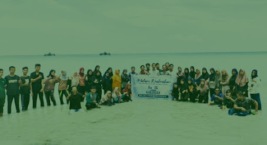

HIMK Tanjungpinang-Bintan Menggelar MAKRAB ke-X
Tepat pada tanggal 19-20 Maret 2022 Himpunan Mahasiswa Kundur (HIMK) menggelar kegiatan Malam Keakraban yang bertemakan BERSUA (Bermalam Bersama Utamakan Keluarga). Kegiatan ini diadakan di Pantai Teluk Dalam Trikora 4, tepatnya berada di Desa Malang Rapat, Kecamatan Gunung Kijang, Kabupaten Bintan, Provinsi Kepulauan Riau.
Kegiatan ini diikuti dengan peserta sebanyak 70 orang, serta dihadiri oleh Demisioner HIMK Tanjungpinang-Bintan. Kegiatan Makrab diselenggarakan untuk merajut tali silaturahmi sekaligus menciptakan kader yang memiliki rasa solidaritas dan soliditas yang dijunjung tinggi, serta menghilangkan perkotak-kotakan dalam lingkaran (HIMK).
"Semoga dengan dilaksanakannya kegiatan ini bisa membawa dan meningkatkan rasa kekeluargaan di dalam diri para anggota, terutama bagi mahasiswa baru angkatan 2021, serta lebih memahami mengenai organisasi kedaerahan," ujar Khalil Jibran selaku ketua panitia Makrab.
Pada kesempatan yang sama, Kakanda Kurnia Syahputra selaku Ketua Umum Himpunan Mahasiswa Kundur (HIMK) menyampaikan bahwa "Kegiatan Malam Keakraban ini diadakan dengan tujuan agar memupuk rasa keakraban seluruh anggota HIMK. Terima kasih kepada anggota dan demisioner yang sudah hadir pada kegiatan Malam Keakraban. Semoga kegiatan yang kita laksanakan sekarang berjalan dengan lancar dan diridhoi oleh Allah SWT."
Pada kegiatan Makrab, menjadi salah satu wadah untuk membentuk dan memahami kepribadian dari masing-masing anggota. Dengan bermain bola naga, air sarung, dan kapal kreatif, kita bisa memanfaatkan permainan berkelompok untuk menguji kemampuan leadership setiap anggota. Selain itu, permainan berkelompok juga bisa digunakan untuk menguji seberapa besar kemampuan anggota dalam bekerja sama.
"Semoga dalam kesempatan kegiatan ini juga dapat membentuk lingkaran keluarga Himpunan Mahasiswa Kundur (HIMK) dan lebih mempererat tali persaudaraan di antara kita. Saya selaku perwakilan Demisioner mengucapkan terima kasih yang tak terkira kepada seluruh anggota sekalian, dan dengan ini saya buka kegiatan Makrab (HIMK) tahun periode 2021-2022," ucap Kakanda Randika Saputra selaku Demisioner HIMK.
Dengan adanya kegiatan Makrab ini diharapkan bisa menjadi suatu titik di mana satu sama lain saling mengenal lebih dalam, simulasi ke depannya akan seperti apa dan juga pembelajaran yang baik dalam melaksanakan tanggung jawabnya ke depan dalam dasar untuk menjalankan tugas dan kewajibannya dengan aktif, kontributif, dan solutif.